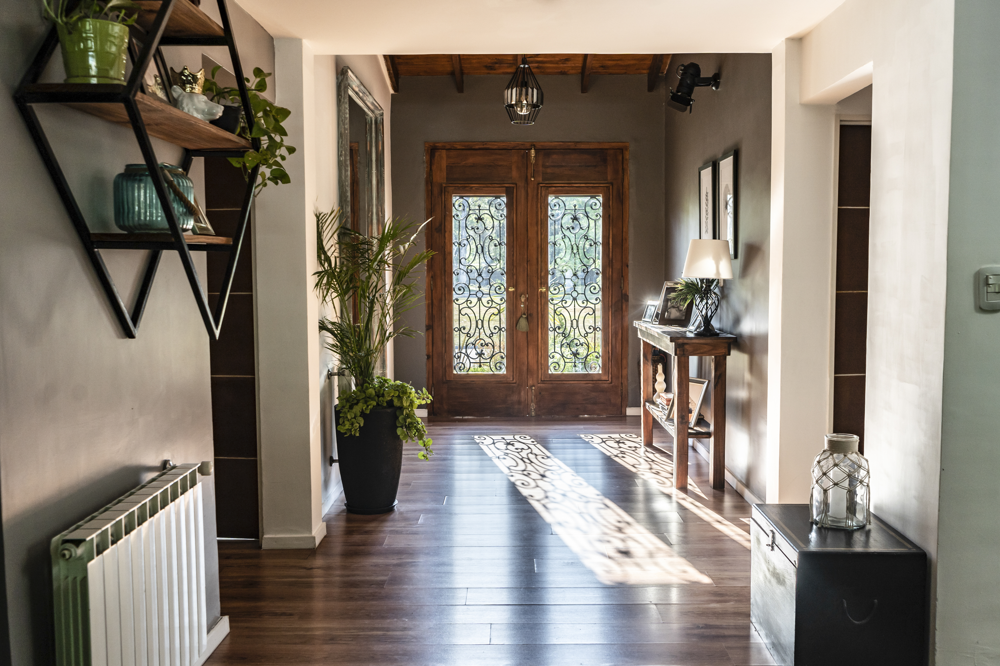
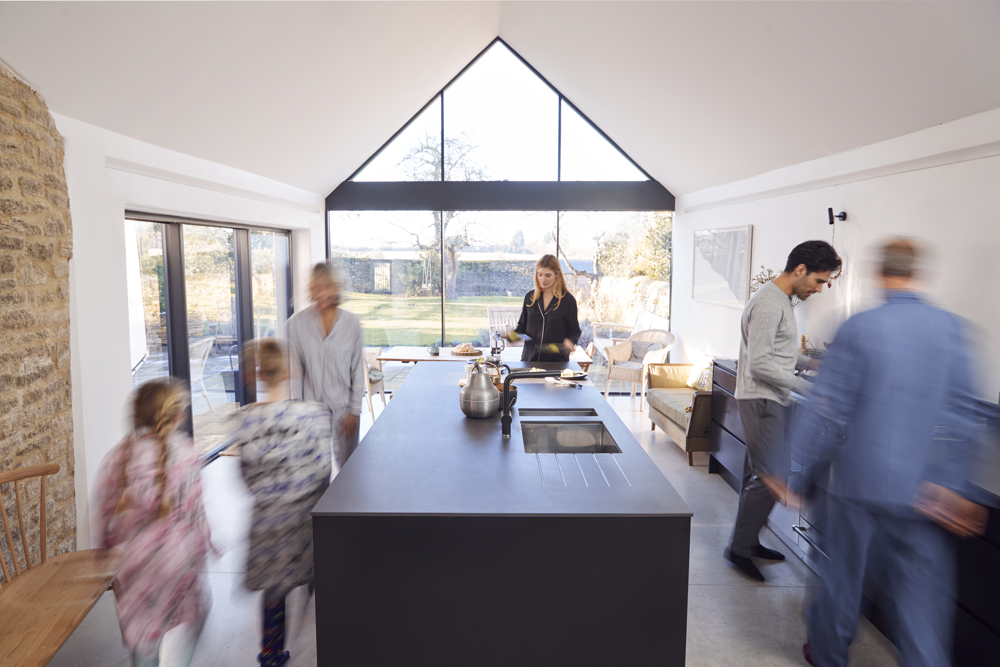

Projet 01
MAISON L
Une maison de ville
ouverte sur la lumière.

Le projet
Située dans un quartier résidentiel de Lille, cette maison de ville manquait de continuité entre ses pièces et de lumière au cœur du plan.
Le projet a consisté à ouvrir les volumes avec retenue, à clarifier les circulations et à composer un intérieur chaleureux autour du bois clair, de la pierre et de la lumière naturelle.
01 — Les volumes
Ouvrir sans dénaturer.

L’enjeu n’était pas de tout décloisonner, mais de créer des liens plus évidents entre les espaces. Le séjour, la salle à manger et la cuisine gagnent en fluidité tout en conservant leur propre atmosphère.
02 — Les matières
Des matières qui laissent
la lumière travailler.
Le chêne clair structure les usages et accompagne les rangements sur mesure. La pierre, utilisée par touches, ancre le projet. Les teintes chaudes et minérales prolongent la lumière du matin au soir.


Avant / après
Recomposer le
rez-de-chaussée.
Relier les usages, ouvrir les perspectives et faire entrer la lumière jusqu’au centre de la maison.


Faites glisser le séparateur pour comparer l’état initial et le projet final.
03 — Les usages
Un intérieur pensé
pour évoluer avec la vie.
Chaque intervention cherche un équilibre entre présence architecturale et simplicité d’usage. Les rangements disparaissent dans les volumes, les passages se libèrent et les pièces restent ouvertes à plusieurs manières d’être habitées.

Fiche projet
Informations du projet Maison L
- Lieu
- Lille, France
- Année
- 2026
- Surface
- 138 m²
- Mission
- Conception intérieure, rénovation et menuiserie sur mesure
- Univers
- Bois clair, pierre naturelle, lumière traversante
Projet fictif créé dans le cadre d’une démonstration portfolio.
Projet suivant
APPARTEMENT V
Lille — 2025